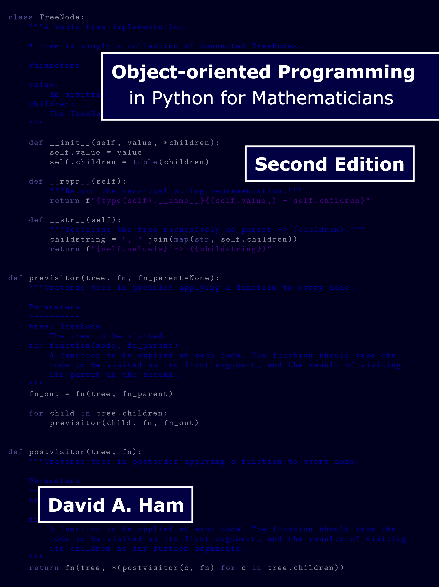

This is the online textbook for the Oxford course on Python in Scientific Computing, offered to MSc students on the MSc in Mathematical Modelling and Scientific Computing, and to DPhil students. The lecturer for this course is Patrick E. Farrell. Please address all questions about the course to Prof. Farrell.
This course is a fork of the MATH50009 Principles of Programming course prepared by David A. Ham, offered to mathematics undergraduates at Imperial College London. Prof. Farrell is very grateful to Dr Ham for his kind and generous assistance in this matter. The videos recorded by Dr Ham sometimes refer to Imperial-specific matters such as assessments; please ignore these.
A suggested timetable for Oxford students might be the following:
Week of term |
Chapters |
|---|---|
Week 1 |
Chapters 1 and 2 |
Week 2 |
Chapter 3 |
Week 3 |
Chapter 4 |
Week 4 |
Chapter 5 |
Week 5 |
Chapter 6 |
Week 6 |
Chapter 7 |
Week 7 |
Chapter 8 |
Week 8 |
Chapter 9 |
but of course you can go through the course at your own pace, as suits your other assignments.
This website builds on the book Object-oriented Programming in Python for Mathematicians, written by Dr Ham. Here you’ll find the full hyperlinked book text, as well as consolidated lists of the accompanying videos.
To do the exercises, find the GitHub Classroom links on the index of exercises.
The complete book text is available on this website. However, if you’d like to have a physical copy, then please buy the book.